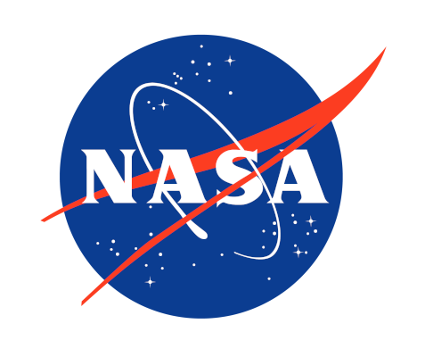

A Supermoon occurs when a full moon occurs at the same time as when the moon's perigree or orbit is at its closest to earth. This causes the full moon to appear up to 30 percent brighter and 14 percent larger than a regular full moon. The next Supermoon of this year is predicted to occur on September 29 and it will be the last of four this year.

There will be four astronauts on the Artemis II Mission: NASA astronauts Reid Wiseman, Victor Glover, and Christina Hammock Koch, and CSA astronaut Jeremy Hansen.The approximately 10-day Artemis II flight test will launch on the agency’s powerful Space Launch System rocket, prove the Orion spacecraft’s life-support systems, and validate the capabilities and techniques needed for humans to live and work in deep space. Artemis II will set the stage for the first woman and first person of color on the Moon through the Artemis program, paving the way for future for long-term human exploration missions to the Moon, and eventually Mars.
: NASA astronauts Christina Hammock Koch, Reid Wiseman (seated), Victor Glover, and Canadian Space Agency astronaut Jeremy Hansen.")
NASA’s James Webb Space Telescope has begun the study of one of the most renowned supernovae, SN 1987A (Supernova 1987A). Located 168,000 light-years away in the Large Magellanic Cloud, SN 1987A has been a target of intense observations at wavelengths ranging from gamma rays to radio for nearly 40 years, since its discovery in February of 1987. New observations by Webb’s NIRCam (Near-Infrared Camera) provide a crucial clue to our understanding of how a supernova develops over time to shape its remnant. So far it has identified never seen before crescent shapes that are thought to be gas that was ejected from the supernova's explosion. Before Webb, the now-retired Spitzer telescope observed this supernova in infrared throughout its entire lifespan, yielding key data about how its emissions evolved over time. However, it was never able to observe the supernova with such clarity and detail.
